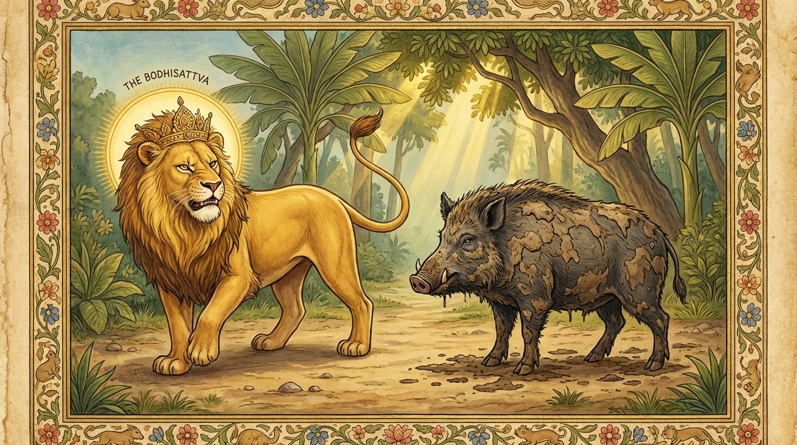

3. සූකර ජාතකය (153)
“චතුප්පදො අහං සම්ම” (මිතුර, මම සිවුපාවෙක් වෙමි) යන මේ දේශනාව ශාස්තෲන් වහන්සේ ජේතවනාරාමයේ වැඩවසන සමයෙහි එක්තරා මහලු තෙරනමක් අරබයා වදාළ සේක. එක් දිනක් රාත්රියෙහි ධර්ම ශ්රවණය පැවැත්වෙද්දී බුදුරජාණන් වහන්සේ ගඳකිළි දොරටුවෙහි වූ රම්ය වූ මැණික් පුවරුවෙහි වැඩසිට භික්ෂු සංඝයාට අවවාද දී ගඳකිළියට පිවිසි සේක. එකල්හි දම්සෙනෙවි සැරියුත් මහරහතන් වහන්සේ බුදුරජාණන් වහන්සේ වැඳ තමන් වහන්සේගේ පරිවෙණයට (කුටියට) වැඩි සේක. මහා මුගලන් මහතෙරුන් වහන්සේ ද තම පරිවෙණයටම වැඩම කොට මොහොතක් විවේක ගෙන සැරියුත් තෙරුන් වහන්සේ වෙත පැමිණ ප්රශ්න විමසූ සේක. විමසන ලද ප්රශ්න දම්සෙනෙවි සැරියුත් තෙරුන් වහන්සේ විසින් අහසෙහි පුන්සඳ මඬල පායන්නාක් මෙන් ඉතා පැහැදිලි ලෙස විසඳා ප්රකට කළ සේක. සිව් පිරිසම බණ අසමින් සිටියහ. එහි සිටි එක් මහලු තෙරනමක් සිතනුයේ “ඉදින් මම මේ පිරිස මැද සැරියුත් තෙරුන් වහන්සේව ආකුලත්වයට පත් කරමින් (පටලවමින්) ප්රශ්න විචාළහොත්, මේ පිරිස ‘මොහු බහුශ්රැතයෙකැ’යි දැන මට සත්කාර සම්මාන කරනු ඇත” යනුවෙනි. හෙතෙම පිරිස අතරින් නැගිට තෙරුන් වහන්සේ වෙත එළඹ එකත්පසෙක සිට “ඇවැත්නි සැරියුත් තෙරුන් වහන්ස, අපිත් ඔබෙන් එක් ප්රශ්නයක් අසන්නෙමු. අපටත් අවකාශ ලබා දෙනු මැනවි. ‘ආවෙඨිකාය වා නිබ්බෙඨිකාය වා නිග්ගහෙ වා පග්ගහෙ වා විසෙසෙ වා පටිවිසෙසෙ වා’ (වෙළීමෙන් හෝ ලිහීමෙන් හෝ නිග්රහයෙන් හෝ ප්රග්රහයෙන් හෝ විශේෂයෙන් හෝ ප්රතිවිශේෂයෙන් හෝ) යන මේවායින් මට විනිශ්චයක් (විසඳුමක්) දෙනු මැනවැ”යි කටට ආ දෙයක් කීවේය. තෙරුන් වහන්සේ ඔහු දෙස බලා “මේ මහල්ලා අයුතු පැවැත්මෙහි පිහිටි, හිස් වූ, කිසිවක් නොදන්නෙකැ”යි සිතා, ඔහු සමඟ කථා නොකොටම ලැජ්ජාවෙන් විජිනිපත (වටාපත) තබා ආසනයෙන් බැස තම පරිවෙණයට වැඩි සේක. මුගලන් මහතෙරුන් වහන්සේ ද තමන්ගේ පරිවෙණයටම වැඩි සේක.
මිනිසුන් නැගිට “අපට මිහිරි ධර්මය අසන්නට ඉඩ නොදී බාධා කළ මේ දුෂ්ට මහල්ලා අල්ලා ගනු” යයි කියමින් ලුහුබැන්දාහ. හෙතෙම පලා යන්නේ විහාර සීමාව කෙළවර බිඳී ගිය ලෑලි ඇති වැසිකිළි වළක වැටී අසූචි තැවරී (ගොඩට විත්) සිටියේය. මිනිස්සු ඔහු දැක විපිළිසර (කලකිරීමට) පත්ව බුදුරජාණන් වහන්සේ වෙත ගියහ. බුදුරජාණන් වහන්සේ ඔවුන් දැක “උපාසකවරුනි, මේ අකාලයේ (නොවේලාවේ) කුමක් නිසා පැමිණියෙහුදැ”යි විමසූ සේක. මිනිස්සු ඒ සිද්ධිය උන්වහන්සේට දන්වා සිටියහ. බුදුරජාණන් වහන්සේ “උපාසකවරුනි, මේ මහලු භික්ෂුව උඩඟු ස්වරූපයෙන් තමන්ගේ තරම නොදැන බලවතුන් සමඟ ගැටෙන්නට ගොස් අසූචි තවරා ගත්තේ දැන් පමණක් නොවේ. පෙරත් මොහු උඩඟු වී තමන්ගේ තරම නොදැන මහා බලවතුන් සමඟ ගැටෙන්නට ගොස් අසූචි තවරා ගත්තේ ය”යි වදාරා, ඔවුන් විසින් ඉල්ලන ලද්දේ අතීත කථාව ගෙනහැර දැක්වූ සේක.
යටගිය දවස බරණැස් නුවර බ්රහ්මදත්ත රජු රාජ්ය කරන සමයෙහි අප මහා බෝසතාණන් වහන්සේ සිංහ යෝනියෙහි උපත ලබා හිමාලයෙහි පර්වත ගුහාවක වාසය කළ සේක. ඊට නුදුරෙහි එක් විලක් ඇසුරු කොට බොහෝ ඌරෝ වාසය කළහ. ඒ විලම ඇසුරු කොට තවුසෝ ද පන්සල් තනාගෙන වාසය කළහ. ඉක්බිති දිනක් සිංහයා මී ගවයන් ඇතුන් ආදීන්ගෙන් එකෙකු මරා ඇති තරම් මස් කා, ඒ විලට බැස පැන් බී ගොඩට ආවේය. ඒ අවස්ථාවෙහි එක්තරා මහත ඌරෙක් ඒ විල ඇසුරු කොට ගොදුරු සොයයි. සිංහයා ඌ දැක “වෙනත් දවසක මූ කන්නෙමි. මා දුටුවොත් නැවත නොඑන්නේ ය”යි සිතා, ඌ නොපැමිණේ යැයි ඇති බියෙන් විලෙන් ගොඩවී (ඌට නොපෙනී) එක් පැත්තකින් යන්නට පටන් ගත්තේය. ඌරා එය බලා “මූ මා දැක මට බියෙන් ළං වීමට නොහැකිව බියපත් ව පලා යයි. අද මා විසින් මේ සිංහයා සමඟ සටන් කිරීම වටින්නේ ය”යි සිතා හිස ඔසවා ඌ යුද්ධය සඳහා කැඳවමින් මෙම පළමු ගාථාව පැවසීය:
“මිතුර, මම සිවුපාවෙක් වෙමි. ඔබ ද සිවුපාවෙකි. එබැවින් මිතුර සිංහය, මෙහි එව. නවතින්න. කුමක් නිසා බිය වී පලා යන්නෙහි ද?”
සිංහයා ඔහුගේ කථාව අසා “මිතුර සූකරය, අද අපට ඔබ සමඟ සටනක් නැත. මෙයින් සත්වන දිනයෙහි මෙම ස්ථානයේ දීම යුද්ධය වේවා”යි පවසා පිටත් ව ගියේය. ඌරා “සිංහයා සමඟ සටන් කරන්නෙමි”යි ඉතා සතුටට පත්ව ඒ පුවත නෑයන්ට දැන්වීය. ඔවුහු ඔහුගේ කථාව අසා බියෙන් තැති ගෙන “දැන් ඔබ අප සියල්ලන්ම විනාශ කරන්නෙහි ද? තමන්ගේ බලය නොදැන සිංහයා සමඟ යුද්ධ කරන්නට කැමති වූයේ ද? සිංහයා පැමිණ අප සියල්ලන්ම ජීවිතක්ෂයට පමුණුවනු ඇත. මෙබඳු සාහසික ක්රියාවක් නොකරන්නැ”යි කීවාහුය. ඌරා ද (එවිට) බියෙන් තැතිගෙන “දැන් කුමක් කරම් දැ”යි විචාළේය. “මිතුර, ඔබ ඔය තවුසන්ගේ වැසිකිළි භූමියට ගොස් කුණු වූ අසූචි දින හතක් මුළුල්ලේ ශරීරයෙහි තවරා ගෙන, ශරීරය වේලා ගෙන, සත්වන දිනයෙහි ශරීරය පිනි බිඳුවලින් තෙමා ගෙන, සිංහයා ඒමට පළමුව එහි ගොස් සුළං හමන දිශාව දැන උඩු සුළඟෙහි සිටින්න. පිරිසිදුකම ප්රිය කරන සිංහයා ඔබේ ශරීරයේ ගඳ ආඝ්රාණය කොට ඔබට ජය දී යනු ඇතැ”යි ඌරෝ කීහ. හෙතෙම එසේ කොට සත්වන දවසේ එහි සිටියේය. සිංහයා ඔහුගේ ශරීර ගන්ධය ආඝ්රාණය කොට අසූචි ගාගෙන ඇති බව දැන, “මිතුර සූකරය, ඔබ සිතූ උපාය ඉතා අගනේය. ඉදින් ඔබ අසූචි තවරා නොගත්තේ නම්, මෙහි දීම ඔබ ව මරණයට පමුණුවන්නෙමි. දැන් වනාහි ඔබේ සිරුර කටින් ඩැහැගැනීමට ද නොහැකිය, පයින් පහර දීමට ද නොහැකිය. එබැවින් මම ඔබට ජය දෙමි”යි පවසා දෙවන ගාථාව වදාළේය:
“ඌර, ඔබ අසූචි තැවරුණු, කුණු වූ ලොම් ඇත්තෙහිය. දුගඳ හමන්නෙහිය. ඉදින් යුද්ධ කිරීමට කැමති නම් මිතුර, මම ඔබට ජය දෙමි.”
එහි පූතිලොමොසි යනු අසූචි තැවරුණු බැවින් දුගඳ හමන ලොම් ඇත්තෙහි ය. දුග්ගන්ධො වාසී යනු අප්රිය වූ පිළිකුල් සහිත ගඳක් විහිදුවන්නෙහි ය. ජයං සම්ම දදාමි තෙ යනු “මිතුර, මම ඔබට ජය දෙමි. මම පරාජය වුණෙමි. ඔබ යන්න” යැයි පවසා සිංහයා එතැනින්ම ආපසු හැරී ගොදුරු ගෙන, විලෙන් පැන් බී පර්වත ගුහාවටම ගියේය. ඌරා ද “මා විසින් සිංහයා පරාජය කරන ලද්දේය”යි නෑයන්ට දැන්වීය. ඔවුහු බියෙන් තැතිගෙන “නැවත දිනක එන සිංහයා අප සියල්ලන්ම මරණයට පමුණුවන්නේය”යි සිතා පලා ගොස් වෙනත් තැනක වාසය කළහ.

ශාස්තෲන් වහන්සේ මෙම ධර්ම දේශනාව ගෙනහැර දක්වා ජාතකය ගළපා වදාළ සේක. “එකල ඌරා වූයේ (මේ) මහලු භික්ෂුව ය. සිංහයා වූයේ බුදු වූ මම ම වෙමි.”
සූකර ජාතක වර්ණනාව තුන්වැන්නයි.